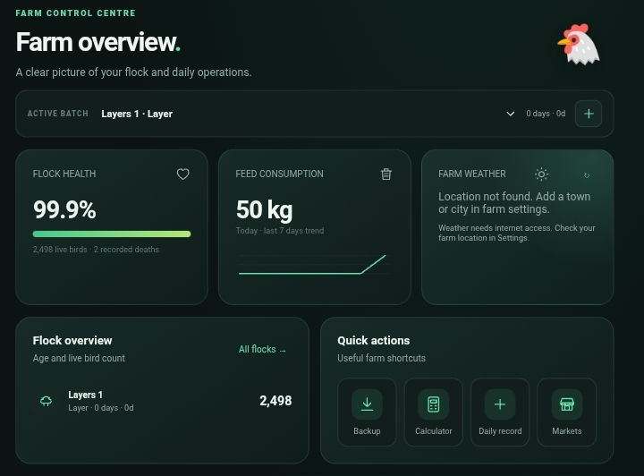

DIGITAL STUDIO · NIGERIA
Your first digital product
starts with an idea.
Learn how to use AI tools to build websites, create digital products, launch useful software and grow practical digital skills — even if you are starting with a phone and no coding background.
WHAT'S
NEXT.
ready to ship.Explore ↓
THE OBA LEARNING PATH
Don’t just use AI.
Build with it.
Practical, beginner-friendly learning for people who want to turn ideas into useful digital products — with clear steps, accessible tools and real examples.
Learn AI tools
Understand what today’s AI tools can do and how to use them for real tasks.
Explore free resources ↗02 / BUILDCreate websites & apps
Follow practical workflows to turn an idea into a working digital experience.
Explore the website guide ↗03 / LAUNCHCreate digital products
Learn to package knowledge, templates and tools into products people can use.
Browse the marketplace ↗OBA MARKETPLACE
Practical guides.
Real skills. Useful outcomes.
We're building a growing library of practical digital products, templates, guides and systems. Open a product to see the full details before checkout.
PROMPT
VAULTPrompts for work, business & content
ChatGPT Prompt Vault
Practical prompts for research, writing, business, planning and everyday productivity.
Buy now →YOUR
WEBSITEFrom phone to live website
Create Your Own Website in Minutes
Learn a beginner-friendly workflow using free tools and free hosting options.
Buy now →Social Content Engine
A ready-to-use content system for businesses and creators who need consistency.
View details →SMARTBrand · website · social checklist
Digital Launch Kit
A practical launch checklist and templates for taking a new digital business online.
View details →THE
BUSINESSWorkflow ideas + implementation guide
AI Automation Starter Kit
Discover repeatable workflows that can reduce manual work and speed up customer operations.
View details →STARTER
SYSTEMIdentity planning made practical
Brand Starter System
Brand direction worksheets, content prompts and practical identity-building resources.
View details →SERVICES
We don't just make things.
We make them useful.
Custom digital work for businesses that need more than a pretty page. Open a service to see the full offer, process and final enquiry action.
Website Design & Development
Premium business websites, landing pages, storefronts and mobile-first digital experiences.
AI Automation
AI-assisted workflows, enquiry systems, customer support, lead capture and repetitive-task automation.
Branding & Visual Identity
Logos, visual direction, brand systems and digital assets that make the business feel consistent.
Social Media Management
Content strategy, planning, creative assets, captions and platform management built around your goals.
Digital Product Creation
We turn your knowledge, framework or idea into a polished PDF, template, toolkit or sellable digital asset.
Digital Strategy & Setup
Positioning, online presence, tools, workflows and launch systems for businesses starting from zero.
OBA FREE LAB
Learn. Build.
Don't wait for a budget.
Useful resources for people starting with what they already have — including free tools, free hosting workflows, AI resources and beginner-friendly digital guides.
BUILT AT OBA
Real projects.
Not just mockups.
Explore digital products and platforms we've worked on. Open a live project where available, or view its project page to understand what it does.

OBA AgroTech
A digital home for practical poultry-farming tools, guidance and farm-focused resources.
Explore live project ↗
ØBΛ AI Trader
An AI-assisted trading research and paper-trading platform built around analysis and risk awareness.
Explore live project ↗
OBA Downloader
A multi-platform media downloader designed to make saving supported public content straightforward.
Explore live project ↗
OBA Farm OS
A poultry farm-management experience for tracking flock performance and daily operations.
Explore farm platform ↗
Ihsan
A faith-oriented digital experience built to make beneficial learning and resources easier to access.
View project repository ↗
Zin Luxe
A visual brand experience. Open the work collection for project details.
View work collection ↗Some projects are live products; others are still being developed or documented. Links are labelled according to their current destination.
WHY OBA
Premium doesn't have
to mean complicated.
Mobile first
Because your customers are already on their phones.
AI-aware
We use modern tools where they genuinely improve speed and systems.
Business-minded
Design is not decoration. Every experience has a job to do.
Built to grow
Start lean, then add products, automation and systems as the business grows.
START HERE
Have something
worth building?
Tell us what you need. We'll help you choose the right digital product or service for your business.
Not sure where to begin? Send a message with your idea, timeline and budget range.